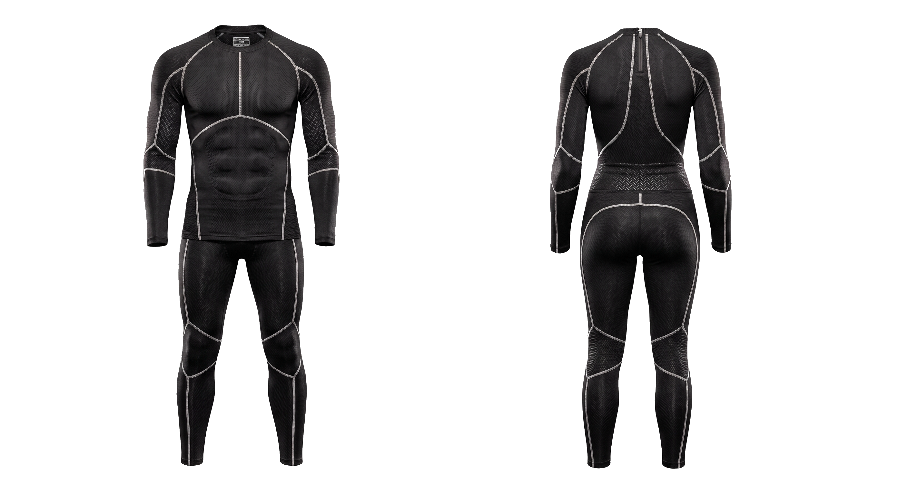

Your form fails before you feel it.
Demson is compression gear with fabric sensors woven in. It corrects your lifting form in real time, through your earbuds, while the set is still happening.

In development in Montreal.
Form breakdown under load is the leading cause of gym injury, and it happens gradually as fatigue sets in. By the time you feel it, the damage is done.
Works anywhere. No cameras, no tripods, no line of sight. It works in a crowded gym at any angle.
Sees what cameras can't. Demson measures abdominal bracing, the most important safety cue in any heavy lift, and one no camera can detect.
Runs for a week. It captures the whole session, including the fatigue that actually causes the injuries.
detail — sensor fabric close-up, 1:1
Early. Prototype in development. Not yet available.